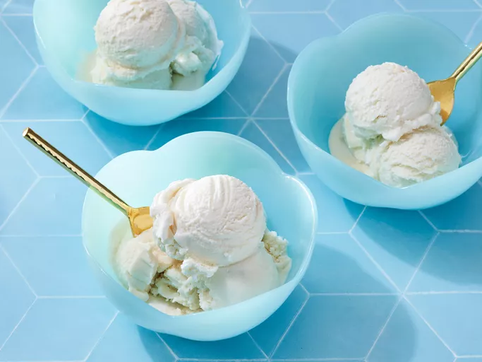

Vanilla Ice Cream

This homemade ice cream is easy to make with just 4 ingredients: pure vanilla extract, milk, heavy whipping cream, and sugar. This American or Philadelphia-style ice cream makes for a brighter, more pronounced vanilla flavor.
Ingredients
- Milk
- Sugar
- Heavy whipping cream
- Vanilla Extract
Steps
- Cook the milk, cream, and sugar until the sugar has dissolved.
- Transfer the mixture to a measuring cup, then add the vanilla extract. Chill overnight.
- Pour the mix into an ice cream maker and churn according to the manufacturer's directions.
- Serve immediately or ripen in the freezer before serving.